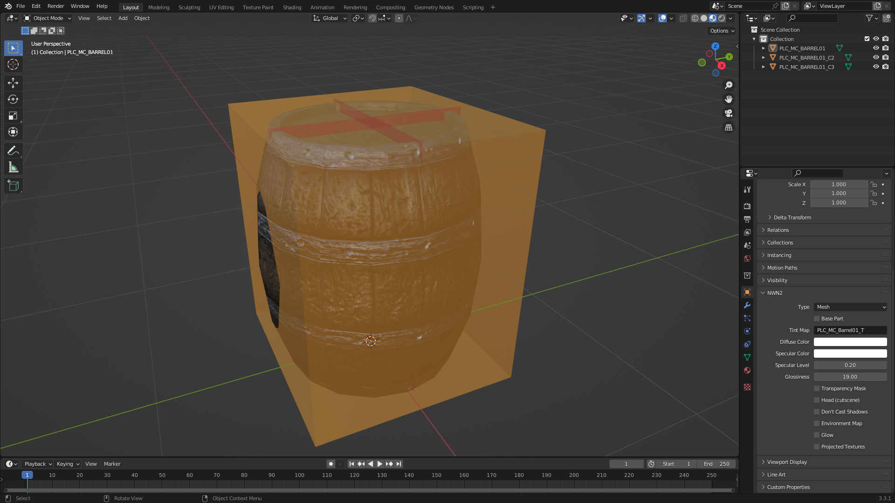
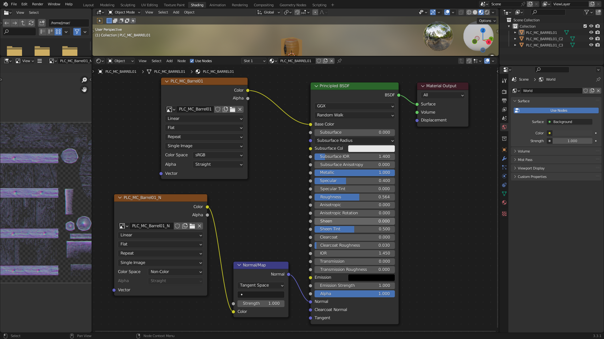

Blender Add-on for Neverwinter Nights 2
Tutorial: Import simple placeable
This tutorial uses Blender 3.3.1.
Steps
-
Go to File > Import > Neverwinter Nights 2 (.mdb/.gr2)

-
Select the desired MDB file from the file browser and click Import MDB/GR2 or double click the file.
Tip: You can select more than one file by holding
CTRLwhile clicking.Note: The import function will search in the game data files for the model textures and extract them for you.
Example
We are going to use PLC_MC_BARREL01.MDB as an example. This is how it should
look when imported into Blender:

In the outliner we can see three objects:
PLC_MC_BARREL01is the placeable model.PLC_MC_BARREL01_C2is the collision mesh type 2. It’s a coarse collision mesh.PLC_MC_BARREL01_C3is the collision mesh type 3. It’s a detailed collision mesh.
Select the object PLC_MC_BARREL01. In the Object Properties there is the
panel NWN2 with object properties specific to Neverwinter Nights 2.
In the Shader Editor, we can see the diffuse texture and the normal map used by the placeable:
